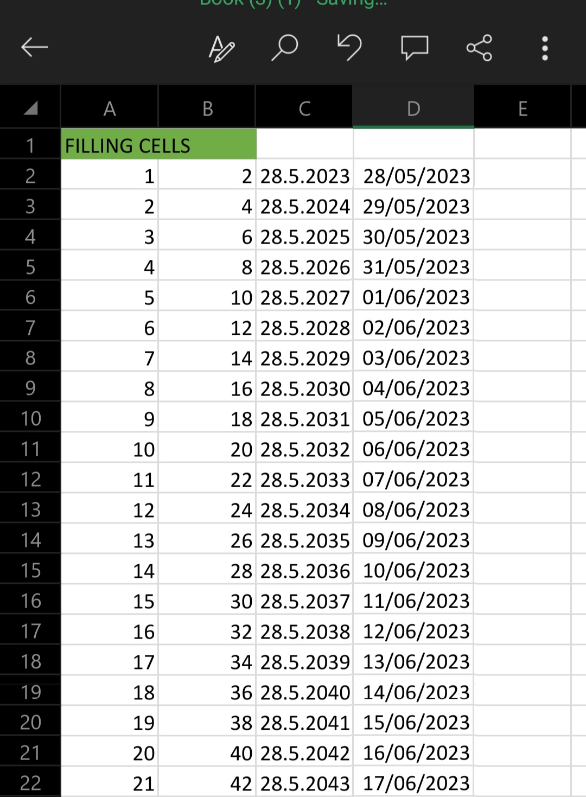

How to fill cells,Remove Duplicate Data Using Format Painter On Excel in Mobile
Introduction
Learning Excel has become a crucial skill in today's data-driven world. With the convenience of mobile technology and the power of apps like Microsoft 365, mastering Excel on your smartphone is now easier than ever before. In this article we will address common challenges faced while working on a mobile device, including filling cells, using the format painter, and removing duplicates.
Filling Cells on Mobile
Filling cells in Excel is a common task, whether you're inputting a series of numbers, dates, or text. Here's how you can efficiently fill cells on your mobile device:
Filling formula's in a range
Take for example the example below


Using the Format Painter
The Format Painter feature in Excel is incredibly useful for applying formatting styles to different cells, saving you time and effort. Here's how you can use the Format Painter on your mobile device:
Removing Duplicates
When working with large datasets, it's essential to identify and remove duplicate entries. Here's how you can do it on your mobile device: